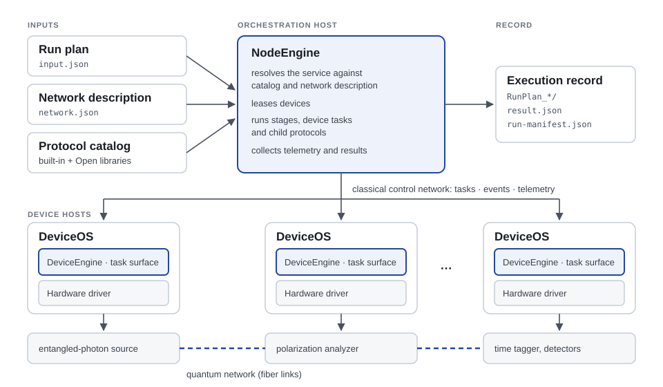
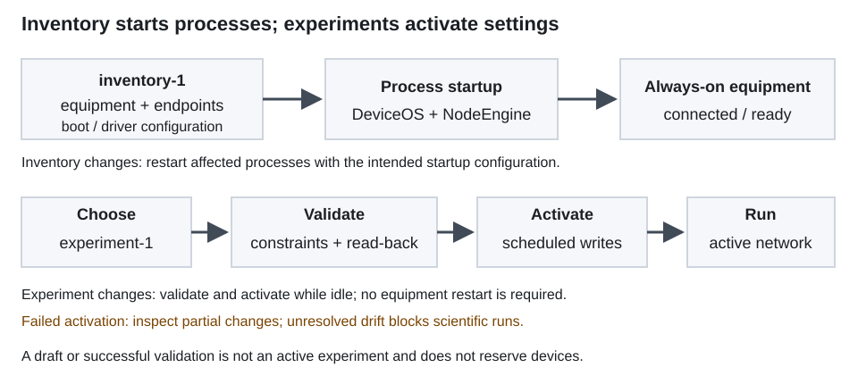

1. How NeQOS works¶
NeQOS (Neapolitan Quantum Operating System, also read as Networked Quantum Operating System) is a distributed operating system for quantum networks. It operates the quantum-classical devices of a network, including entangled-photon sources, polarization analyzers and controllers, attenuators, detectors and time taggers, as one coordinated system, so that network services can run unattended with calibration expressed as reusable protocols.
This chapter explains the model behind the software: the two design principles, the processes that implement them, the two declarative inputs every run uses, how a service is composed and executed, and what a run leaves behind. The rest of the documentation assumes these terms.


NeQOS turns a service request, a declared network and a catalog of reusable protocols into coordinated device operations, and records every run.¶
Compose, extend, operate, record¶
Every use of NeQOS follows the same cycle:
Step |
What happens |
Where it is documented |
|---|---|---|
Compose |
A network service is realized as a meta-protocol composed from reusable micro-protocols already in the protocol catalog. |
|
Extend |
When the catalog lacks an operation, new protocols are added in an Open library, and new hardware is added through a driver. |
|
Operate |
The NodeEngine executes the protocol over the network, coordinating the devices through their DeviceEngines. |
Install the software, Describe the network, First run without hardware, Run and customize a protocol |
Record |
Inputs, resolved bindings, device replies, measurements, estimates and failures are preserved in a structured execution record. |
Two design principles¶
A microkernel-inspired runtime. In a microkernel operating system the kernel keeps only the mechanisms needed to coordinate execution (scheduling, communication and resource arbitration), and everything else runs outside it. NeQOS applies the same philosophy to a quantum network. A small runtime core, split between the NodeEngine and the DeviceEngines, provides protocol scheduling, resource binding, execution-state management and telemetry. Network services and experiments live outside this core, as reusable protocols. Vendor-specific behavior lives further below, in hardware drivers. A new experiment therefore becomes a new composition of existing operations, not a new control program.
Dynamic composition instead of a fixed stack. Classical networks organize functions in layers, and a service follows a fixed vertical path through them. That model fits a local, stateless resource such as a classical packet. The resource of a quantum network is an entangled state: it is non-local and stateful, and generating, transforming, validating and consuming it requires coordinated actions on several devices. NeQOS therefore assembles each service at run time from reusable micro-protocols, around the quantum resource being produced or measured.
For the scientific basis of this micro-protocol/meta-protocol model, see Theoretical foundations in the NeQOS repository, including the protocol-suite paper [1] and the architecture Internet-Draft [2].
Polarization compensation shows why. In a classical link it would be a physical-layer function. In an entanglement-distribution network it needs source setup, temporal alignment of the detectors, background estimation, tomography, fitting, installation of the analyzer correction and validation, on devices spread across the testbed. NeQOS expresses it as one meta-protocol that reuses the same alignment, background and tomography operations used by other services.
The runtime¶
NeQOS is organized as a two-tier control plane: one NodeEngine per logical network node and one DeviceOS process per device. They communicate over the classical control network through task, event and telemetry channels.
NodeEngine¶
The NodeEngine is the orchestration process. It:
reads the network description and the protocol catalog;
resolves a requested service against them and validates its inputs;
leases the devices the service needs and releases them at the end;
advances the protocol’s stages, submits device tasks and child protocols, and tracks their state;
collects telemetry and writes the execution record.
The NodeEngine can run on any host that reaches the DeviceOS processes; its
location is independent of the hardware. --nodeId identifies the engine.
Its aggregated view can coordinate devices owned by several inventory nodes.
With --serve, the same process also serves the authenticated browser
interface; the browser is not a separate execution engine.
DeviceOS and the DeviceEngine¶
Each device is served by its own DeviceOS process, running on a host physically connected to it. DeviceOS hosts the DeviceEngine, the device-side runtime, which:
exposes the device’s task surface to the NodeEngine: the device tasks it accepts, the parameters that can be read or written, and the signals and telemetry it publishes;
admits and schedules device tasks: foreground tasks are serialized, while background tasks can run concurrently subject to driver-declared blocking and device I/O constraints;
reports each task’s lifecycle (
PENDING,RUNNING,PAUSED, and the terminalCOMPLETED,FAILEDorABORTED) through task lifecycle reporting andTASK_EVENTnotifications;reports device health (connected, initialized, ready). A device must be ready before it can be leased.
Hardware drivers¶
Below the DeviceEngine, a hardware driver translates each abstract device task into the vendor’s commands or SDK calls. Protocols use the declared task surface: they ask for operations such as “set the analyzer to state D”, “acquire coincidences” or “set the attenuation”, and the driver realizes them on the specific device. The same protocol therefore runs on any device whose driver offers the required task contracts and compatible network bindings. The software-only Fake driver lets orchestration be exercised without hardware.
What NeQOS does not do¶
NeQOS coordinates device operations through software scheduling and classical communication; it does not provide hard real-time timing guarantees. It covers configuration, calibration, alignment, acquisition, validation and recording. Real-time operations on nanosecond-to-microsecond timescales, including detector electronics, time-tagger internals and device firmware, remain in the devices and their vendor software.
Two declarative inputs¶
NodeEngine operates from two declarative inputs: the network description, which declares the equipment and how it is used, and the run plan, which specifies the protocols to execute. Together with the protocol catalog, they define the requested execution.
The network description is one logical input, stored in two files for operational convenience: the lab inventory and the experiment network. This file split does not introduce a third kind of declarative input; it separates information with different lifetimes.
The network description¶
Starting the laboratory equipment and configuring an experiment are separate operations. The inventory declares the equipment and its startup configuration; the experiment network declares the optical topology and operating settings. Together, these files provide the network description.
This separation lets an operator send a new experiment network to an already running NodeEngine, validate it and activate its settings without restarting the DeviceOS processes. The inventory describes what equipment is available; the experiment network describes how to use it; the run plan describes what to do with it.


Start the equipment from the inventory, then activate experiment networks through NodeEngine while the DeviceOS processes remain running.¶
The lab inventory: available equipment¶
The lab inventory (typically lab-inventory.json, schema
inventory-1) declares the logical nodes and their devices: identities,
driver types, DeviceEngine endpoints (host and ports), driver configuration,
boot-only hardware settings and limits. It does not contain the experiment’s
optical bindings or operating values.
NodeEngine and the DeviceOS processes start from the same inventory. Each DeviceOS uses it to initialize and serve its device, independently of which experiment will later be selected. Changing endpoints, drivers or boot-only configuration is an inventory change, not an experiment change: restart the affected processes with the updated inventory.
The experiment network: equipment in use¶
The experiment network (typically network.json, schema
experiment-1) references the inventory through inventoryId and selects
the devices used by the experiment. It declares their operating settings,
the quantum links and link bindings: which device channel serves which
link, and in which role (source, inlineAttenuator,
polarizationAnalyzer, polarizationAligner, sink, splitterInput
or splitterOutput). It also describes analyzer output ports and measurement
topology, time-tagger input channels and detector-health wiring.
Device identities refer back to the inventory; endpoints and driver startup configuration are not duplicated. Passive splitters belong to the experiment topology and have no DeviceOS process. Equipment not selected for an experiment can remain connected without participating in that experiment.
The topology must match the physical cabling. Activating a JSON document does not reconnect optical fibers. Protocols resolve links and roles to the declared devices and channels; retargeting a service changes these declarations or its inputs, not the protocol implementation.
Activate an experiment without restarting DeviceOS¶
In the browser interface, load an experiment network, validate it against the inventory and live device capabilities, review the proposed changes, then activate it. To select another network, first deactivate the current one while the system is idle. Deactivation does not stop DeviceOS or undo device settings.
NodeEngine applies the selected settings through scheduled device operations and checks the read-backs. Only a successful activation makes the experiment network active: loading or validating a draft is not enough. Scientific runs require an active network and no unresolved configuration drift. If activation fails, some settings may already have changed; there is no automatic rollback.
DeviceOS continues serving the same equipment throughout these steps. A new
experiment therefore does not require a new DeviceOS launch, as long as its
equipment and startup configuration are already covered by the inventory.
For a headless launch, NodeEngine can activate a network supplied through
--networkFile before executing a run plan. See Describe the network for the file
contracts and Use the browser interface for the activation workflow.
The run plan¶
The run plan (typically input.json) selects a protocol library and an
ordered list of steps to execute against the active experiment network.
Each step names a protocolId and the inputs to override.
An Open library also declares its folder so that NodeEngine can load its
definitions and optional handlers. See Run and customize a protocol.
The same active network can support successive run plans. Changing a protocol input or the sequence of steps does not require restarting DeviceOS or reactivating an unchanged network.
A named step can supply a declared output to a later step through a whole-value
reference, $steps.<stepId>.<exportPath>. The source must have completed
successfully, and the imported value retains its JSON type. References do not
expose private scratchpad values and do not share device leases between steps.
The protocol catalog¶
The protocol catalog is the set of protocol definitions available to the NodeEngine:
the built-in catalog, shipped with NodeEngine (library identifier
neqos-protected). Its definitions are read-only.Open libraries, supplied by users: protocol definitions plus optional Python handlers, loaded next to the built-in catalog.
The built-in catalog is organized by domain and function, for example
link.polarizationCompensation contains
CompensateLinkPolarizationFromSeparableHDProbes. The domain identifies an
area of operation (acquisition, device, link, timing,
tomography, entanglement, execution); the function groups related
capabilities. These are catalog paths, not invocation identifiers: a run step
uses the protocol’s protocolId without a domain/function prefix.
A public built-in protocol, marked by "exported": true in its
definition, can also be called from an Open library. This flag exposes a
protocol for composition; it does not describe the protocol’s output data.
Micro-protocols and meta-protocols¶
A micro-protocol is an atomic, reusable network operation with declared inputs, resource requirements, execution logic and outputs, for example measuring count rates, setting an analyzer state or reconstructing a density matrix.
A meta-protocol composes micro-protocols, and other meta-protocols, into a network service, for example compensating the polarization of a link, or measuring the fidelity of an entangled pair.
The distinction is functional, not a separate file format: both are protocols in the catalog, and the documentation calls them protocols when the difference does not matter. When one protocol invokes another, the caller is the parent and the invoked one is the child. This is a runtime relationship for reuse, not a hierarchy: the same child serves many parents with different inputs and devices.
Every protocol declares a contract:
Inputs (shared parameters), with types, defaults and constraints. Required inputs without defaults must be supplied. Other inputs keep their declared defaults unless the run overrides them.
Resource requests: the devices the protocol must lease, usually given explicitly through an input such as
resourceDeviceIdsand checked against the network description.Stages: the ordered steps the protocol executes.
Outputs (exports), each with a key of the form
<domain>.<function>.<role>.<name>. The role says what kind of output it is:plan,applied,observation,estimate,calibration,artifactorstatus.
Inside a protocol¶
A stage is the basic runtime action. A stage can
run a handler, a Python function that performs orchestration or analysis;
submit a device task to a DeviceEngine and wait for its reply;
submit a child protocol.
Child submission and waiting are separate actions: a parent can declare
SubmitMicroProtocolStage and WaitMicroProtocolStage stages, or a
handler can use ctx.submit_microprotocol() and
ctx.microprotocol_state() at runtime. Completed child exports are
available through ctx.child_output(). See
Built-in stage handlers.
Stages share state through the protocol’s scratchpad. A child receives its
inputs from the parent’s stage parameters, and the parent imports only the
child’s declared outputs. Each handler returns a decision: advance to the next
stage, repeat the stage, requeue it to run again later (for example while
waiting for a child), complete the protocol, or fail it. Protocols can publish
their declared outputs through PublishResultStage, which writes the
scientific result. Exporting values through ExportScratchStage alone
does not write result.json.
At run time a compact definition can therefore expand into a large execution graph of child protocols and device tasks, built according to the inputs and the current state of the network.
Running a service¶
The request for a service is a run plan (input.json): it names the
library and an ordered list of steps, each with a protocol and the inputs to
override. For a headless inventory run, start NodeEngine with
--inventoryFile, --networkFile, --nodeId and
--metaProtocolRun; add --waitProtocol to wait for completion.
DeviceOS receives only --inventoryFile; the experiment is activated
by NodeEngine.
For browser operation, start NodeEngine with --serve and the inventory,
then validate and activate the experiment and submit its run from the
interface. --serve and --metaProtocolRun are alternatives.
Closing the browser does not stop the engine or an experiment.
See Run and customize a protocol and Use the browser interface.
For each step, the NodeEngine:
resolves the protocol in the catalog and validates the effective inputs against its contract and against the network description;
records the protocol instance as
SUBMITTEDandSCHEDULED;leases the requested devices and starts
RUNNING;advances the stages, submitting device tasks and child protocols;
on successful completion, publishes its declared outputs; execution ends in a terminal state:
COMPLETED,FAILEDorABORTED.
Steps run in order, and a failed step stops the plan.
Leases¶
A lease gives one protocol exclusive use of a device. A device can be leased only when it is registered, ready and not leased by another protocol. The protocol that first acquires a device is its lease root and keeps it until it ends, also while it waits for its children. A foreground child can use a device its ancestor already holds through a delegated lease: it takes the active turn on the device, and the parent does not operate on that device in the meantime. Composed services therefore keep their devices from the first to the last operation.
Each step of a run plan acquires its own leases, so exclusivity does not extend across steps. When an operation must keep the same devices from start to end, compose it in one parent protocol.
Cleanup¶
Protocols can register terminal cleanup actions, for example restoring a source’s attenuation or stopping a recording. If the protocol fails or is aborted, the NodeEngine runs them while the devices are still leased. Protocols with a declared restoration policy snapshot the previous settings and attempt to restore them at the end. Their outputs and manifests report the attempt and its outcome. Cleanup is not a general rollback: an explicitly installed or persisted calibration can remain in place after a later failure.
The execution record¶
A submitted run plan has an execution record in a RunPlan_* directory under
MetaProtocolResults on the NodeEngine host. Its tree mirrors the execution
graph: one directory per step, stage and child protocol. At each protocol you
find:
result.json, when published: the declared outputs in itsoutputsmapping, under their export keys. This is the scientific result.run-manifest.json: operational provenance, including runtime identity, parent and children, state transitions, leases and cleanup.summary.md, when enabled: a short human-readable view of the result.artifacts the protocol declares, such as reports, histograms and plots.
Some data stay on the device side: raw time-tag files are written on the time tagger’s DeviceOS host, and persisted analyzer compensation tables on the analyzer’s DeviceOS host. See Read results and diagnose failures.
What a terminal state means¶
COMPLETED means that the declared execution finished successfully.
Physical quality is assessed through the published outputs, such as
polarization contrast, fidelity and background level, not the terminal state.
Some protocols publish measured data and restoration evidence before reporting
FAILED; others fail before reaching their publication stage.
A failure before any output is published leaves its evidence in the run
manifest and the logs.
Extending NeQOS¶
NeQOS can be extended at both of its boundaries.
New services: write an Open library. Its meta-protocols compose public built-in protocols and its own protocols, with optional Python handlers. A language model can draft such a library from the catalog contracts; see LLM Authoring Guide.
New hardware: write a hardware driver that implements the device tasks, parameters and signals of its device class. Protocols that use those tasks then run on the new device unchanged; see DeviceOS API.
Glossary¶
- Activation¶
A scheduled application of a validated experiment network’s operating settings, with device replies and read-back evidence. See Describe the network.
- Built-in catalog¶
The protocols shipped with NodeEngine (library
neqos-protected).- Child protocol¶
A protocol invoked by another protocol’s stage. See parent.
- DeviceEngine¶
The device-side runtime hosted by DeviceOS. It exposes the task surface and admits, schedules and reports device tasks.
- DeviceOS¶
The per-device process that hosts the DeviceEngine and the hardware driver.
- Device task¶
An abstract operation offered by a device, such as setting a state or acquiring counts. Foreground tasks run one at a time; background tasks run concurrently.
- Driver contract manifest¶
A generated JSON description of a driver’s kind, task surface and configuration policy. It supports offline validation without importing hardware SDKs; NodeEngine checks its fingerprint against the live driver.
- Drift¶
Unresolved differences after a failed network activation. Scientific runs are blocked until the configuration has been reconciled; a failure does not imply rollback.
- Experiment network¶
An
experiment-1document selecting inventory devices, quantum links, bindings and operating settings. Validate and activate it before a run.- Execution record¶
Everything a run leaves behind: the
RunPlan_*tree withresult.json,run-manifest.jsonand artifacts.- Export¶
A declared output of a protocol, published under a key
<domain>.<function>.<role>.<name>.- Hardware driver¶
The adapter between abstract device tasks and a vendor’s device.
- Inventory¶
An
inventory-1document declaring stable equipment, endpoints and boot configuration. Changes to this startup configuration require restarting the affected processes, unlike experiment activation.- Latch guard¶
A declared detector-health policy for an acquisition window. It uses the exact detector/readout pairing; invalid finite windows are discarded and retried only when recovery evidence and the retry budget allow it.
- Lease¶
Exclusive use of a device by one protocol. The lease root holds it; a foreground child can use it through a delegated lease.
- Link binding¶
The declaration, in the network description, of which device channel serves which quantum link and in which role.
- Meta-protocol¶
A protocol that composes other protocols into a network service.
- Micro-protocol¶
An atomic, reusable network operation with a declared contract.
- Network description¶
The inventory/experiment pair declaring nodes, devices, endpoints, quantum links, link bindings, hardware limits and operating settings.
- NodeEngine¶
The orchestration process. It resolves services, leases devices, executes protocols and writes the execution record.
- Open library¶
A user-supplied set of protocol definitions and optional handlers.
- Operator¶
The authenticated service hosted by NodeEngine with
--serve, and its browser interface for network activation, validated runs and history.- Parent protocol¶
A protocol whose stage invokes another protocol. Parent and child are a runtime relationship, not a hierarchy.
- Protocol catalog¶
All protocol definitions available to a NodeEngine: the built-in catalog plus any Open libraries.
- Run plan¶
The
input.jsonrequest: a library and an ordered list of protocol steps with their input overrides.- Readout pairing¶
The declared association between an optical output, a detector channel and a TimeTagger input. It determines the exact health guard mapping; an available association is not evidence that a run enabled the guard.
- Run queue¶
Persisted operator submissions waiting for execution. Pending plans are revalidated before starting; resuming a queue does not retry a failed run.
- Stage¶
One step of a protocol: a handler, a device task, or a child protocol.
- Sub-link¶
A quantum link whose
parentLinkIdnames its upstream link, for example a passive splitter output. Link lineage preserves that declared relationship; it does not measure the physical cable path.- Task surface¶
What a device offers to the NodeEngine: its device tasks, parameters, signals and telemetry.